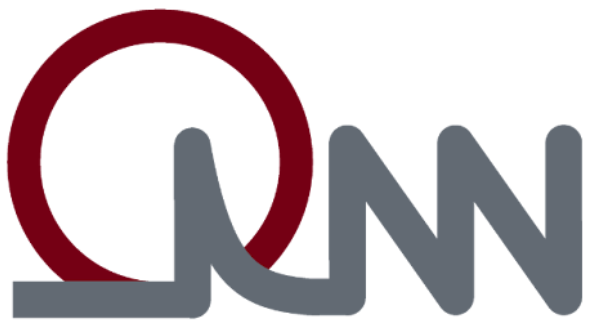
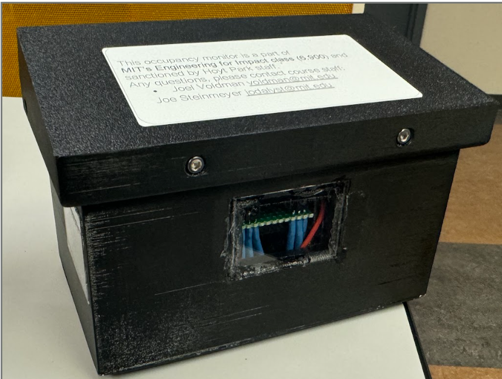
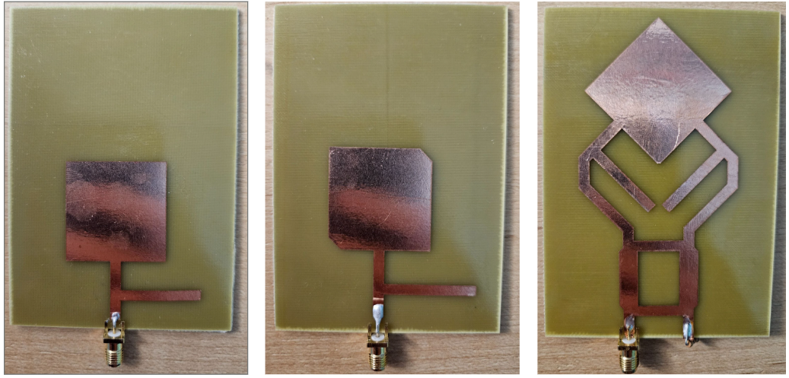

Projects

In progress
HHG Coherent EUV Source
MIT Quantum Nanostructures and Nanofabrication Group
Developing a tabletop coherent extreme-ultraviolet source based on high-harmonic generation. Specifically engineering the process of nanoantenna fabrication and HSQ grating fabrication. Developing experimental setups to measure the efficiency of the EUV source.

IR Break-Beam People Counter
Engineering For Impact, MIT
An entryway people counter using two infrared break beams to detect entering and exiting people. In a team of 8 we fully designed, built, and deployed the system at Hoyt Park in Cambridge, MA. Achieved 5% error in counting crossings over a 1 hour period, while consuming only 20mW of power averaged across a day. I specifically participated in the circuit design, power management, PCB design, testing, and deployment.

Circularly Polarized Antennas
Electromagnetic Waves and Application, MIT
Macrofabricated circularly polarized antennas using copper tape on insulated boards. Optimized antenna design through simulation. Measured the circular polarization of the antennas using a vector network analyzer. Achieved a 7.8dB improvement in axial ratio.
RTL Logic with Thin-Film Transistors
Micro/Nano Processing, MIT
Fabricated thin-film transistor logic in MIT.nano cleanroom. Designed and fabricated basic logic gates using RTL logic. Evaluated using probe station.
Under NDA
Novel High-Voltage Transistor
Analog Devices Inc.
Fabricated and characterized a novel high-voltage transistor in the cleanroom. Focused specifically on material stack optimization, and electrical and physical characterization of the device. Details are under NDA.
Differential Amplifier
Semiconductor Electronic Circuits, MIT
Designed and laid out a differential amplifier using Cadence Virtuoso and a modern TSMC pdk. Simulated the amplifier for various different parameters. Passed DRC and LVS with 29.6dB gain, 176.2µW consumption, and 365.5ps propogation delay. Cannot publically share the layout or write-up due to NDA :(.